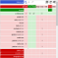

Firefox tweaks
Other than TOR Broswer, Firefox is likely the most privacy-respecting browser available for android if you take the time to modify and configure it. Firstly, you can configure settings and features by either manually changing settings in about:config (see Privacy Tool's recomendations). Another, quicker way to do this is by using a user.js file that firefox will read on boot and change the settings accordingly. To do this, you will need root access along with a file manager capable of accessing the /data directory where Firefox's files are stored. Possibly the most comprehensive user.js configuration is ghacks user.js. Keep in mind, however, that it is made for desktop first so may require some configuration for a smooth mobile experience.
To add additional privacy and security features to firefox, you can use browser extensions. Here are some recommendations:
uBlock Origin
uBlock Origin is an extension that allows you to block various, potentially privacy-intrusive, elements such as advertisements and JavaScript scripts. The default filters are very comprehensive, however it can be expanded with custom filters, whitelists, and by using the element picker to block elements visually.
Decentraleyes
Many modern websites load resources from content delivery networks (CDNs) such as Google, Cloudflare, or Amazon. To avoid communicating with these third parties to deliver content, Decentraleyes blocks this content and instead provides the files included with the extension. This means that you do not have to interact with potentially privacy-intrusive services, and content is delivered faster as it is stored locally.
Privacy Badger
While this extension can be made mostly redundant by a configured uBlock Origin setup due to overlap between blocked trackers, Privacy Badger can discover trackers while you use it instead of using a preset list. This means that the longer you use the extension, the more new trackers you will be able to block that other blockers like uBlock Origin may miss.
uMatrix
uMatrix is an advanced blocker that can block any content or remote connection including (but not limited to) cookies, CSS resources (such as web fonts and stylesheets, images, and scripts/requests made by scripts (XHR). You can also decide what to block per domain granularly. While this is generally more effective than other blockers (such as uBlock Origin or Privacy Badger), it will break the majority of websites you use it with and therefore requires a lot more configuration for it to be useable. This is for advanced users only.
Cookie AutoDelete
Most people expect your interaction with a website to end when you leave or close the tab. Unfortunatley, third party cookies make this unlikely and can be used to track you anywhere you are on the web. Cookie AutoDelete automatically deletes all cookies when a tab is closed for specified demains and/or on a preset schedule. It also supports a whitelist/greylist so that specified sites can still utilize cookies if necessary.
ClearURLs
Many websites use code in their URLs to track your online activity. ClearURLs uses WebExtensions to remove these elements from the URL. The page will still be displayed exactly the same. Additionally, it also works on links, meaning you will always be directed to the URL without tracking code.
Additional Resources
If you would like to add a resource here, please submit a PR on this site's GitHub repo.
- PrivacyTools: Comprehensive guide to alternatives to common services/software. Desktop focused but has some Android privacy information. Much can be applied on android.
- EFF: A nonprofit focused on defending digital privacy and free speech. Their website has various useful guides as well as news and releases about current digital privacy issues. They also hold various events and have developed many tools listed in this guide.
- Free Software Foundation: A nonprofit organization that promotes free open source software (FOSS) and defending software user rights. They are most well known for their work on the GNU project and GNU/Linux. They also have many provacy oriented guides such as Email Self-Defense.
- Terms of Service; Didn't Read: Helps users understand the (intentionally) convoluted terms of service for many online websites and services and rates them depending on how much they respect user privacy.